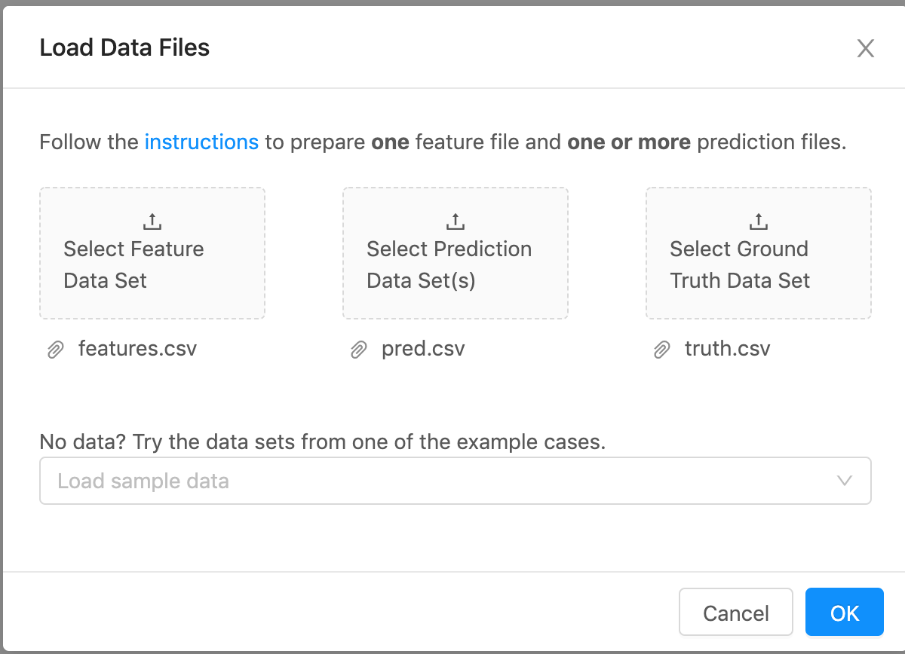
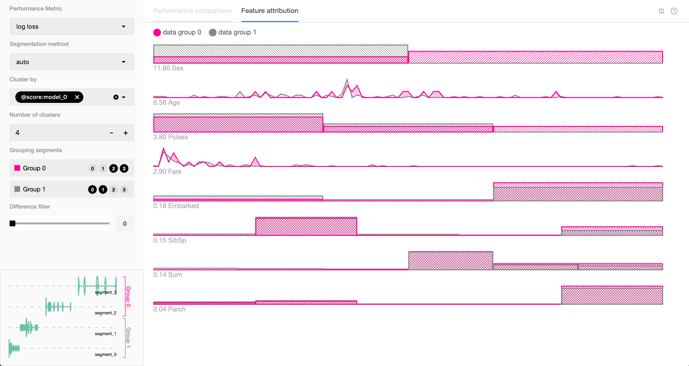
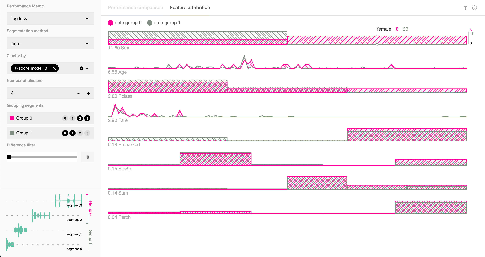

<!DOCTYPE html>
<html lang="ja">
<head><script src="/mblog/livereload.js?mindelay=10&amp;v=2&amp;port=1313&amp;path=mblog/livereload" data-no-instant defer></script>
  
    <title>Uber製の機械学習モデルのデバッグツールManifold :: MatLoverによるMatlab以外のブログ</title>
  
  <meta http-equiv="content-type" content="text/html; charset=utf-8">
<meta name="viewport" content="width=device-width, initial-scale=1.0">
<meta name="description" content="本記事はQrunchからの転載です。
Uberが公開している機械学習モデルの予測と特徴量の関係性を可視化するツールであるManifoldを紹介します。
Manifoldを試す Manifoldでできることを見ていきます。
インストール レポジトリをgit cloneしてから、githubのページにあるように以下のようにしてインストールできました。
# under the root directory, install all dependencies yarn # demo app is in examples/manifold directory cd examples/manifold # instal demo app dependencies yarn # start the app npm run start 準備 まずユーザーは次の3つのデータを用意します。
入力データの特徴量を記述したcsv 入力データに対するラベル 入力データに対するモデルの予測値（分類問題の場合には各クラスに属する確率になります） モデルはなんでも良く、必要なのは予測値であることに注意してください。
今回はkaggleのタイタニックのデータから適当にテストデータを作ってみました。 テストデータとlightgbmのモデルを用いて、次のような感じでManifoldに必要なデータを作ってます。
with open(&#34;./titanic_res/features.csv&#34;, &#34;w&#34;) as f: columns = &#34;,&#34;.join(list(X_test.columns)) # X_testがテストデータの特徴量 f.write(f&#34;{columns}\n&#34;) for i, features in X_test.iterrows():　f_string = &#34;,&#34;.join([str(x) for x in features]) f.write(f&#34;{f_string}\n&#34;) with open(&#34;./titanic_res/pred.csv&#34;, &#34;w&#34;) as f: pred = bst.predict(X_test) # bstがlightgbmのモデル f.write(&#34;survived,death\n&#34;) for prob in pred: f.write(f&#34;{prob},{1-prob}\n&#34;) with open(&#34;./titanic_res/truth.csv&#34;, &#34;w&#34;) as f: f.write(&#34;truth\n&#34;) for truth in y_test: # y_testがテストデータのラベル label = &#34;survived&#34; if truth == 1 else &#34;death&#34; f.write(f&#34;{label}\n&#34;) Manifoldでの可視化 アップロード npm run startを実行すると、ブラウザ上でアプリが立ち上がります。 立ち上げ直後はファイルのアップロードを促されるので、準備したファイルをドラッグアンドドロップしてアップロードします。 " />
<meta name="keywords" content="" />

  <meta name="robots" content="noodp" />

<link rel="canonical" href="http://localhost:1313/mblog/post/00016/" />


      <script async src="https://www.googletagmanager.com/gtag/js?id=G-LFC5W8DKV1"></script>
      <script>
        var doNotTrack = false;
        if ( false ) {
          var dnt = (navigator.doNotTrack || window.doNotTrack || navigator.msDoNotTrack);
          var doNotTrack = (dnt == "1" || dnt == "yes");
        }
        if (!doNotTrack) {
          window.dataLayer = window.dataLayer || [];
          function gtag(){dataLayer.push(arguments);}
          gtag('js', new Date());
          gtag('config', 'G-LFC5W8DKV1');
        }
      </script>


  
  <link rel="stylesheet" href="http://localhost:1313/mblog/css/custom.min.e3b0c44298fc1c149afbf4c8996fb92427ae41e4649b934ca495991b7852b855.css">

  
  <link rel="stylesheet" href="http://localhost:1313/mblog/css/buttons.min.86f6b4c106b6c6eb690ae5203d36b442c1f66f718ff4e8164fa86cf6c61ad641.css">

  
  <link rel="stylesheet" href="http://localhost:1313/mblog/css/code.min.d529ea4b2fb8d34328d7d31afc5466d5f7bc2f0bc9abdd98b69385335d7baee4.css">

  
  <link rel="stylesheet" href="http://localhost:1313/mblog/css/fonts.min.5bb7ed13e1d00d8ff39ea84af26737007eb5051b157b86fc24487c94f3dc8bbe.css">

  
  <link rel="stylesheet" href="http://localhost:1313/mblog/css/footer.min.eb8dfc2c6a7eafa36cd3ba92d63e69e849e2200e0002a228d137f236b09ecd75.css">

  
  <link rel="stylesheet" href="http://localhost:1313/mblog/css/gist.min.a751e8b0abe1ba8bc53ced52a38b19d8950fe78ca29454ea8c2595cf26aad5c0.css">

  
  <link rel="stylesheet" href="http://localhost:1313/mblog/css/header.min.75c7eb0e2872d95ff48109c6647d0223a38db52e2561dd87966eb5fc7c6bdac6.css">

  
  <link rel="stylesheet" href="http://localhost:1313/mblog/css/main.min.775ac2af004d44c22a6d000fbd1d9af529642f5cef27399d0280d180af2c2e9b.css">

  
  <link rel="stylesheet" href="http://localhost:1313/mblog/css/menu.min.310d32205bdedd6f43144e3c3273c9deecd238eba5f9108db5ea96ca0cfbe377.css">

  
  <link rel="stylesheet" href="http://localhost:1313/mblog/css/pagination.min.bbb986dbce00a5ce5aca0504b7925fc1c581992a4bf57f163e5d69cc1db7d836.css">

  
  <link rel="stylesheet" href="http://localhost:1313/mblog/css/post.min.ad50c7f4d00e7975918f37fc74c6029e1959a40d66fb5b2c6564a8715e985573.css">

  
  <link rel="stylesheet" href="http://localhost:1313/mblog/css/syntax.min.e9ab635cf918bc84b901eb65c0b2caa74c9544245e3647c1af5c129896ef276e.css">

  
  <link rel="stylesheet" href="http://localhost:1313/mblog/css/terminal.min.e3b0c44298fc1c149afbf4c8996fb92427ae41e4649b934ca495991b7852b855.css">

  
  <link rel="stylesheet" href="http://localhost:1313/mblog/css/terms.min.b81791663c3790e738e571cdbf802312390d30e4b1d8dc9d814a5b5454d0ac11.css">


<link rel="shortcut icon" href="http://localhost:1313/mblog/favicon.png">
<link rel="apple-touch-icon" href="http://localhost:1313/mblog/apple-touch-icon.png">


<meta name="twitter:card" content="summary" />


<meta property="og:locale" content="ja" />
<meta property="og:type" content="article" />
<meta property="og:title" content="Uber製の機械学習モデルのデバッグツールManifold">
<meta property="og:description" content="本記事はQrunchからの転載です。
Uberが公開している機械学習モデルの予測と特徴量の関係性を可視化するツールであるManifoldを紹介します。
Manifoldを試す Manifoldでできることを見ていきます。
インストール レポジトリをgit cloneしてから、githubのページにあるように以下のようにしてインストールできました。
# under the root directory, install all dependencies yarn # demo app is in examples/manifold directory cd examples/manifold # instal demo app dependencies yarn # start the app npm run start 準備 まずユーザーは次の3つのデータを用意します。
入力データの特徴量を記述したcsv 入力データに対するラベル 入力データに対するモデルの予測値（分類問題の場合には各クラスに属する確率になります） モデルはなんでも良く、必要なのは予測値であることに注意してください。
今回はkaggleのタイタニックのデータから適当にテストデータを作ってみました。 テストデータとlightgbmのモデルを用いて、次のような感じでManifoldに必要なデータを作ってます。
with open(&#34;./titanic_res/features.csv&#34;, &#34;w&#34;) as f: columns = &#34;,&#34;.join(list(X_test.columns)) # X_testがテストデータの特徴量 f.write(f&#34;{columns}\n&#34;) for i, features in X_test.iterrows():　f_string = &#34;,&#34;.join([str(x) for x in features]) f.write(f&#34;{f_string}\n&#34;) with open(&#34;./titanic_res/pred.csv&#34;, &#34;w&#34;) as f: pred = bst.predict(X_test) # bstがlightgbmのモデル f.write(&#34;survived,death\n&#34;) for prob in pred: f.write(f&#34;{prob},{1-prob}\n&#34;) with open(&#34;./titanic_res/truth.csv&#34;, &#34;w&#34;) as f: f.write(&#34;truth\n&#34;) for truth in y_test: # y_testがテストデータのラベル label = &#34;survived&#34; if truth == 1 else &#34;death&#34; f.write(f&#34;{label}\n&#34;) Manifoldでの可視化 アップロード npm run startを実行すると、ブラウザ上でアプリが立ち上がります。 立ち上げ直後はファイルのアップロードを促されるので、準備したファイルをドラッグアンドドロップしてアップロードします。 " />
<meta property="og:url" content="http://localhost:1313/mblog/post/00016/" />
<meta property="og:site_name" content="MatLoverによるMatlab以外のブログ" />

  <meta property="og:image" content="http://localhost:1313/mblog/og-image.png">

<meta property="og:image:width" content="1200">
<meta property="og:image:height" content="627">

  <meta property="article:section" content="機械学習" />


  <meta property="article:published_time" content="2020-01-28 22:52:36 &#43;0900 JST" />


</head>
<body>


<div class="container">

  <header class="header">
  <div class="header__inner">
    <div class="header__logo">
      <a href="http://localhost:1313/mblog/">
  <div class="logo">
    Terminal
  </div>
</a>

    </div>
    
      <ul class="menu menu--mobile">
  <li class="menu__trigger">Menu&nbsp;▾</li>
  <li>
    <ul class="menu__dropdown">
      
        
          <li><a href="/mblog/">Home</a></li>
        
      
        
          <li><a href="/mblog/page/archives/">Archives</a></li>
        
      
        
          <li><a href="/mblog/page/search/">Search</a></li>
        
      
      
    </ul>
  </li>
</ul>

    
    
  </div>
  
    <nav class="navigation-menu">
  <ul class="navigation-menu__inner menu--desktop">
    
      
        
          <li><a href="/mblog/" >Home</a></li>
        
      
        
          <li><a href="/mblog/page/archives/" >Archives</a></li>
        
      
      
        <li>
          <ul class="menu">
            <li class="menu__trigger">&nbsp;▾</li>
            <li>
              <ul class="menu__dropdown">
                
                  
                    <li><a href="/mblog/page/search/" >Search</a></li>
                  
                
              </ul>
            </li>
          </ul>
        </li>
      
    
  </ul>
</nav>

  
</header>


  <div class="content">
    
<article class="post">
  <h1 class="post-title">
    <a href="http://localhost:1313/mblog/post/00016/">Uber製の機械学習モデルのデバッグツールManifold</a>
  </h1>
  <div class="post-meta"><time class="post-date">2020-01-28</time></div>

  
    <span class="post-tags">
      
      #<a href="http://localhost:1313/mblog/tags/manifold/">manifold</a>&nbsp;
      
      #<a href="http://localhost:1313/mblog/tags/%E6%A9%9F%E6%A2%B0%E5%AD%A6%E7%BF%92/">機械学習</a>&nbsp;
      
      #<a href="http://localhost:1313/mblog/tags/%E7%89%B9%E5%BE%B4%E9%87%8F/">特徴量</a>&nbsp;
      
      #<a href="http://localhost:1313/mblog/tags/python/">Python</a>&nbsp;
      
    </span>
  
  


  

  <div class="post-content"><div>
        <p>本記事はQrunchからの転載です。</p>
<hr>
<p>Uberが公開している機械学習モデルの予測と特徴量の関係性を可視化するツールである<a href="https://github.com/uber/manifold#upload-csv-to-demo-app">Manifold</a>を紹介します。</p>
<h1 id="manifoldを試す">Manifoldを試す<a href="#manifoldを試す" class="hanchor" ariaLabel="Anchor">#</a> </h1>
<p>Manifoldでできることを見ていきます。</p>
<h2 id="インストール">インストール<a href="#インストール" class="hanchor" ariaLabel="Anchor">#</a> </h2>
<p>レポジトリをgit cloneしてから、githubのページにあるように以下のようにしてインストールできました。</p>
<div class="highlight"><pre tabindex="0" class="chroma"><code class="language-bash" data-lang="bash"><span class="line"><span class="cl"><span class="c1"># under the root directory, install all dependencies</span>
</span></span><span class="line"><span class="cl">yarn
</span></span><span class="line"><span class="cl"><span class="c1"># demo app is in examples/manifold directory</span>
</span></span><span class="line"><span class="cl"><span class="nb">cd</span> examples/manifold
</span></span><span class="line"><span class="cl"><span class="c1"># instal demo app dependencies</span>
</span></span><span class="line"><span class="cl">yarn
</span></span><span class="line"><span class="cl"><span class="c1"># start the app</span>
</span></span><span class="line"><span class="cl">npm run start
</span></span></code></pre></div><h2 id="準備">準備<a href="#準備" class="hanchor" ariaLabel="Anchor">#</a> </h2>
<p>まずユーザーは次の3つのデータを用意します。</p>
<ol>
<li>入力データの特徴量を記述したcsv</li>
<li>入力データに対するラベル</li>
<li>入力データに対するモデルの予測値（分類問題の場合には各クラスに属する確率になります）</li>
</ol>
<p>モデルはなんでも良く、必要なのは予測値であることに注意してください。</p>
<p>今回はkaggleのタイタニックのデータから適当にテストデータを作ってみました。
テストデータとlightgbmのモデルを用いて、次のような感じでManifoldに必要なデータを作ってます。</p>
<div class="highlight"><pre tabindex="0" class="chroma"><code class="language-python" data-lang="python"><span class="line"><span class="cl"><span class="k">with</span> <span class="nb">open</span><span class="p">(</span><span class="s2">&#34;./titanic_res/features.csv&#34;</span><span class="p">,</span> <span class="s2">&#34;w&#34;</span><span class="p">)</span> <span class="k">as</span> <span class="n">f</span><span class="p">:</span>
</span></span><span class="line"><span class="cl">    <span class="n">columns</span> <span class="o">=</span> <span class="s2">&#34;,&#34;</span><span class="o">.</span><span class="n">join</span><span class="p">(</span><span class="nb">list</span><span class="p">(</span><span class="n">X_test</span><span class="o">.</span><span class="n">columns</span><span class="p">))</span> <span class="c1"># X_testがテストデータの特徴量</span>
</span></span><span class="line"><span class="cl">    <span class="n">f</span><span class="o">.</span><span class="n">write</span><span class="p">(</span><span class="sa">f</span><span class="s2">&#34;</span><span class="si">{</span><span class="n">columns</span><span class="si">}</span><span class="se">\n</span><span class="s2">&#34;</span><span class="p">)</span>
</span></span><span class="line"><span class="cl">    <span class="k">for</span> <span class="n">i</span><span class="p">,</span> <span class="n">features</span> <span class="ow">in</span> <span class="n">X_test</span><span class="o">.</span><span class="n">iterrows</span><span class="p">():</span>　
</span></span><span class="line"><span class="cl">        <span class="n">f_string</span> <span class="o">=</span> <span class="s2">&#34;,&#34;</span><span class="o">.</span><span class="n">join</span><span class="p">([</span><span class="nb">str</span><span class="p">(</span><span class="n">x</span><span class="p">)</span> <span class="k">for</span> <span class="n">x</span> <span class="ow">in</span> <span class="n">features</span><span class="p">])</span>
</span></span><span class="line"><span class="cl">        <span class="n">f</span><span class="o">.</span><span class="n">write</span><span class="p">(</span><span class="sa">f</span><span class="s2">&#34;</span><span class="si">{</span><span class="n">f_string</span><span class="si">}</span><span class="se">\n</span><span class="s2">&#34;</span><span class="p">)</span>
</span></span><span class="line"><span class="cl">
</span></span><span class="line"><span class="cl"><span class="k">with</span> <span class="nb">open</span><span class="p">(</span><span class="s2">&#34;./titanic_res/pred.csv&#34;</span><span class="p">,</span> <span class="s2">&#34;w&#34;</span><span class="p">)</span> <span class="k">as</span> <span class="n">f</span><span class="p">:</span>
</span></span><span class="line"><span class="cl">    <span class="n">pred</span> <span class="o">=</span> <span class="n">bst</span><span class="o">.</span><span class="n">predict</span><span class="p">(</span><span class="n">X_test</span><span class="p">)</span> <span class="c1"># bstがlightgbmのモデル</span>
</span></span><span class="line"><span class="cl">    <span class="n">f</span><span class="o">.</span><span class="n">write</span><span class="p">(</span><span class="s2">&#34;survived,death</span><span class="se">\n</span><span class="s2">&#34;</span><span class="p">)</span>
</span></span><span class="line"><span class="cl">    <span class="k">for</span> <span class="n">prob</span> <span class="ow">in</span> <span class="n">pred</span><span class="p">:</span>
</span></span><span class="line"><span class="cl">        <span class="n">f</span><span class="o">.</span><span class="n">write</span><span class="p">(</span><span class="sa">f</span><span class="s2">&#34;</span><span class="si">{</span><span class="n">prob</span><span class="si">}</span><span class="s2">,</span><span class="si">{</span><span class="mi">1</span><span class="o">-</span><span class="n">prob</span><span class="si">}</span><span class="se">\n</span><span class="s2">&#34;</span><span class="p">)</span>        
</span></span><span class="line"><span class="cl">        
</span></span><span class="line"><span class="cl"><span class="k">with</span> <span class="nb">open</span><span class="p">(</span><span class="s2">&#34;./titanic_res/truth.csv&#34;</span><span class="p">,</span> <span class="s2">&#34;w&#34;</span><span class="p">)</span> <span class="k">as</span> <span class="n">f</span><span class="p">:</span>
</span></span><span class="line"><span class="cl">    <span class="n">f</span><span class="o">.</span><span class="n">write</span><span class="p">(</span><span class="s2">&#34;truth</span><span class="se">\n</span><span class="s2">&#34;</span><span class="p">)</span>
</span></span><span class="line"><span class="cl">    <span class="k">for</span> <span class="n">truth</span> <span class="ow">in</span> <span class="n">y_test</span><span class="p">:</span> <span class="c1"># y_testがテストデータのラベル</span>
</span></span><span class="line"><span class="cl">        <span class="n">label</span> <span class="o">=</span> <span class="s2">&#34;survived&#34;</span> <span class="k">if</span> <span class="n">truth</span> <span class="o">==</span> <span class="mi">1</span> <span class="k">else</span> <span class="s2">&#34;death&#34;</span>
</span></span><span class="line"><span class="cl">        <span class="n">f</span><span class="o">.</span><span class="n">write</span><span class="p">(</span><span class="sa">f</span><span class="s2">&#34;</span><span class="si">{</span><span class="n">label</span><span class="si">}</span><span class="se">\n</span><span class="s2">&#34;</span><span class="p">)</span>
</span></span></code></pre></div><h2 id="manifoldでの可視化">Manifoldでの可視化<a href="#manifoldでの可視化" class="hanchor" ariaLabel="Anchor">#</a> </h2>
<h3 id="アップロード">アップロード<a href="#アップロード" class="hanchor" ariaLabel="Anchor">#</a> </h3>
<p>npm run startを実行すると、ブラウザ上でアプリが立ち上がります。
立ち上げ直後はファイルのアップロードを促されるので、準備したファイルをドラッグアンドドロップしてアップロードします。
</p>
<h3 id="性能の分布">性能の分布<a href="#性能の分布" class="hanchor" ariaLabel="Anchor">#</a> </h3>
<p>アップロードすると、次のような画面になります。
</p>
<p>Manifoldでは<strong>予測値の当たり具合によって</strong>、自動で各データがsegmentに分けられています。
各segmentはlog lossの値をK-meansに適用することでできたクラスタになっています。</p>
<p>グラフの横軸がlog lossとなっており、segmentにわけてデータの個数が描画されています。
segment0に含まれるデータは性能が良く、segment3に含まれるデータは性能が悪いという見方になります。<br>
また各segmentはGroup0かGroup1に振り分けられます。Group0が性能が悪く、Group1が性能が良いです。<br>
各segmentがどのGroupに入るのかはユーザー側で変えることが可能です。</p>
<h3 id="特徴量の分布">特徴量の分布<a href="#特徴量の分布" class="hanchor" ariaLabel="Anchor">#</a> </h3>
<p>ManifoldではGroup毎の特徴量の分布の違いを見ることができます。
</p>
<p>一番上の行がGroupによる性別の分布の違いをあらわしたもので、そこにマウスをもってくると次のようになります。
</p>
<p>性別が男性である場合にはGroup1に入っている（性能が良い）データが46個、Group0に入っている（性能が悪い）データが7個となっています。
また、マウスを右側にもっていくと次のようになります。
</p>
<p>これによると、性別が女性である場合にはGroup1に入っている（性能が良い）データは29個、Group0に入っている（性能が悪い）データは8個となっています。
よって、女性のほうが予測が上手くいっていないことになります。
タイタニック号に乗っていた女性は男性よりも優先されて救命ボートに乗っていました。男性である場合にはほぼボートに乗れず、そのような人たちは生き残らないため、予測が容易という解釈になるのかなと思います。<br>
一方で女性のなかでもボートに乗れるかどうかは他の要素によって左右されるため、予測が男性に比べると難しいという解釈かと思います。</p>
<p>今は一番上が性別、2行目が年齢となっています。この並びの順番ですが、KL-divergenceによって求められた「2つのGroupでの特徴量の分布」が<strong>違う順</strong>になっています。
下にいくほどGroup間での違いがない特徴量であることを示します。</p>
<h3 id="どう使うべきか">どう使うべきか？<a href="#どう使うべきか" class="hanchor" ariaLabel="Anchor">#</a> </h3>
<p>Manifoldで出来ることは、予測が上手くいっていないデータの傾向を可視化することです。
どうしてモデルの予測が上手くいっていないのかを説明すること、またモデルを改善することに役立てることができるのではないかと思います。</p>

      </div></div>

  

  
    

  
</article>

  </div>

  
    <footer class="footer">
  <div class="footer__inner">
    
      <div class="copyright">
        <span>© 2025 Powered by <a href="https://gohugo.io">Hugo</a></span>
    
      <span>:: <a href="https://github.com/panr/hugo-theme-terminal" target="_blank">Theme</a> made by <a href="https://github.com/panr" target="_blank">panr</a></span>
      </div>
  </div>
</footer>


<script type="text/javascript" src="/mblog/bundle.min.js"></script>


  
</div>

</body>
</html>
